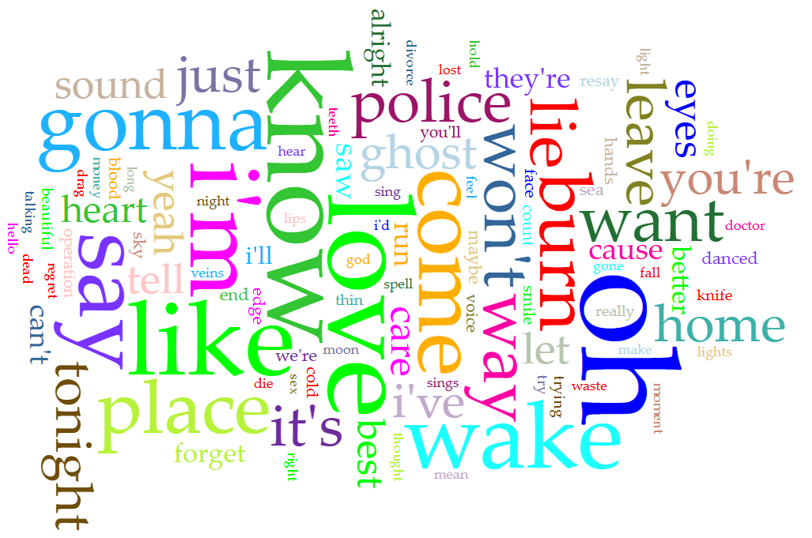
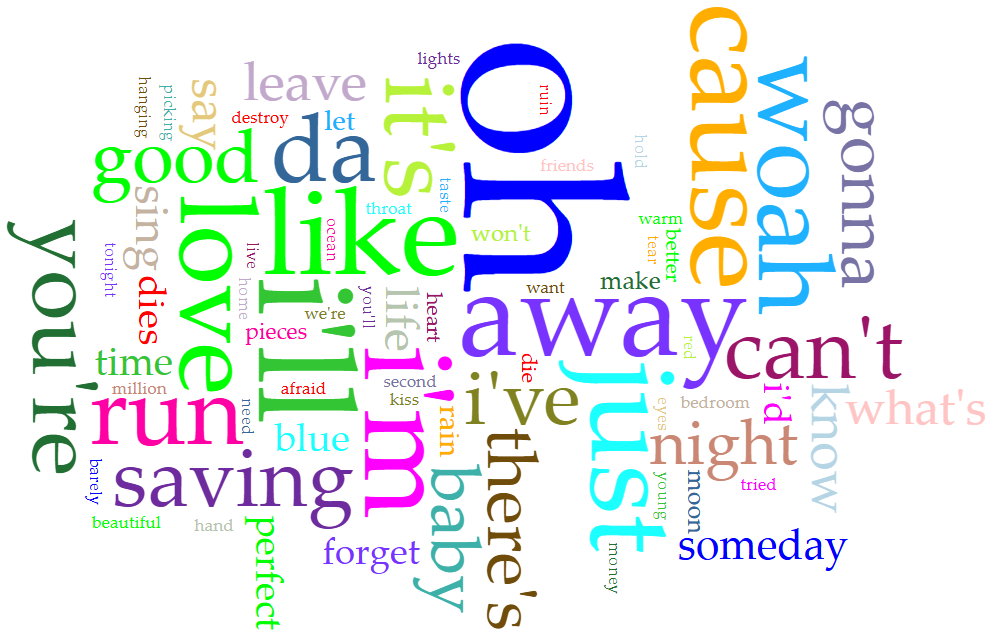
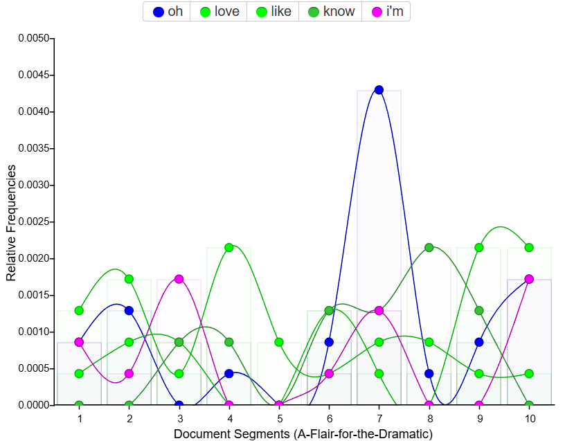
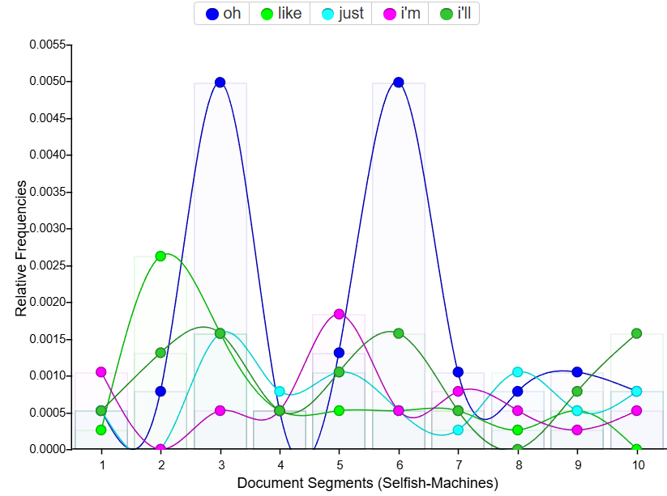
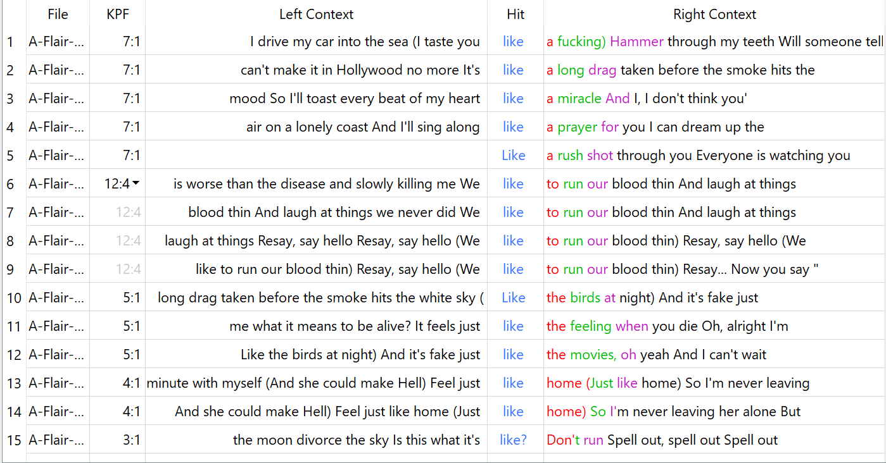
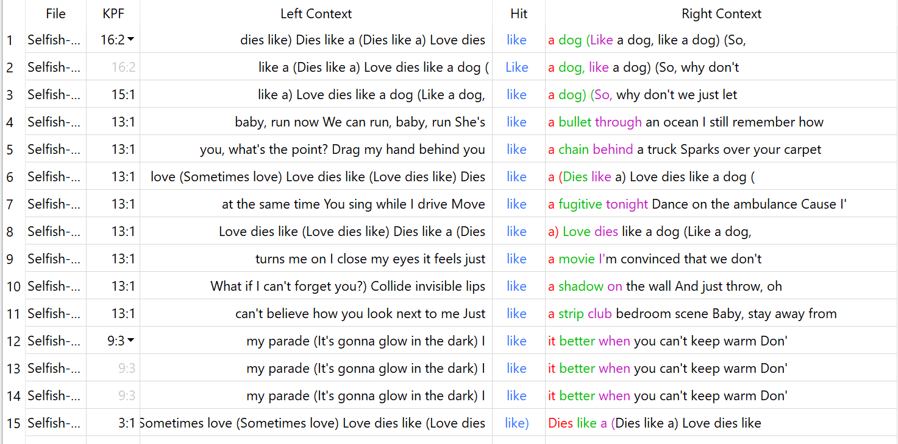
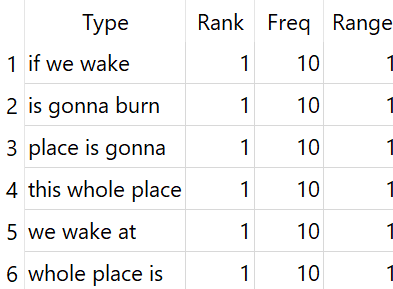
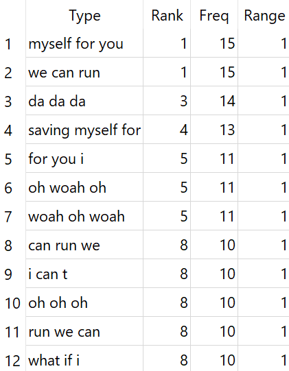
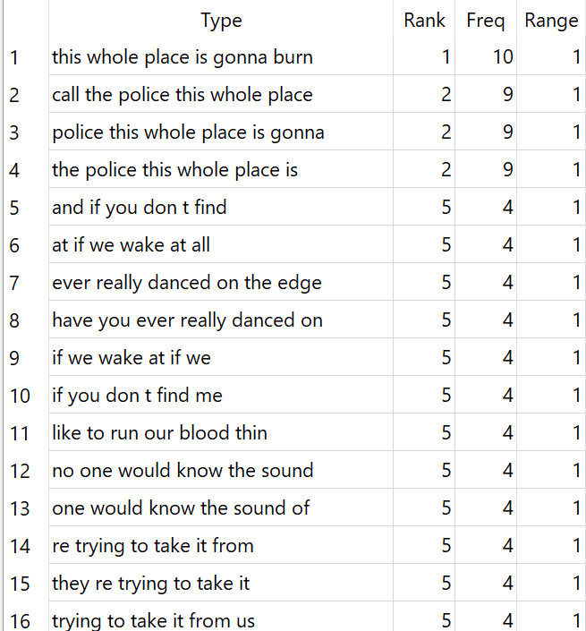
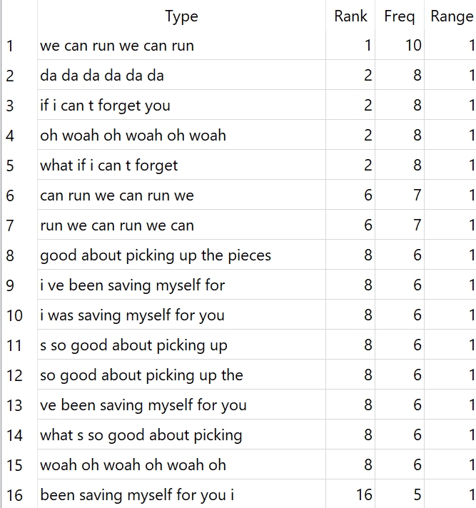

Pierce The Veil is an American rock band formed in San Diego in 2006. It was founded by Vic and Mikey Fuentes (brothers), and Vic Fuentes is the lead singer to this day. Pierce The Veil is my favorite band (has been for years); I'm very passionate about their music, and very excited to explore data derived from their albums further!
I will be comparing text-based data derived from the band's first two albums, A Flair for the Dramatic and Selfish Machines.
First, I input each album into their own .txt files. I copy-and-pasted the lyrics of each song from Genius.com.
Then, I began my analysis using Voyant tools. Voyant helped me visualize frequently-used words through text clouds, and gave me a graph for the frequency of certain words throughout the album. Voyant Tools gave me a good idea of what to look for, and what data I could use in my analysis with AntConc.
AntConc allowed me to get more in-depth information on frequently used phrases, what occured before/after those phrases, and overall more precise text-based analysis.
Here's the text clouds Voyant generated:


I think these comparisons are pretty interesting. In my opinion, the frequent words used in A Flair for the Dramatic seem more morbid than the ones from Selfish Machines. I also find it somewhat laughable that words like "oh" and "da" are very common.
Here's the graphs Voyant generated:


I find it interesting that "oh" is the most frequently used word across both albums, but in Selfish Machines, "oh" spikes twice across the album- most likely in different songs.
Here's visualizations of some analysis I performed in AntConc:


*Under construction!


*Under construction!


*Under construction!